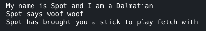

Ruby Classes
DBC Phase 0 Week 6
January 16, 2015
Ruby is an object-oriented language, and classes are a part of what makes objects possible. A class is a blueprint used to create individual objects. Objects of a certain class will have methods/variables associated with that class. Things like strings, arrays, etc are considered classes, but you can also define your own classes.
In Ruby, here is how we would define a class to create dog objects:
Some of the characteristics a dog can have are a name and a breed. These can be used to tell different dogs apart. In Ruby, these characteristics would be instance variables, which are variables that are associated with a particular instance of the class. Instance variables are available across methods for that instance and are differentiated from other variables with an @ sign. In our example, every dog will have these charateristics, but they won't necessarily have the same values for them.
A class definition needs an initialize method to be able to create new instances of the class. This method will be invoked when class_name.new is called outside of the class. Within this method is usually where you would assign the instance variables.
Ruby classes can also have methods associated with them, which can then be called on an instance of the class. These are defined as you would define any other Ruby method, but can only be used in association with an object of that type of class.
Here are some examples of defining methods within a class:

After you have finished defining the method, you can create new instances outside of the class and use the methods on that class.
This is how you would create a new Dog and call its methods:
This is what the above code would output to the console:
